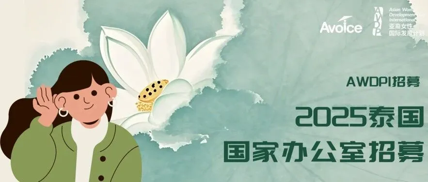
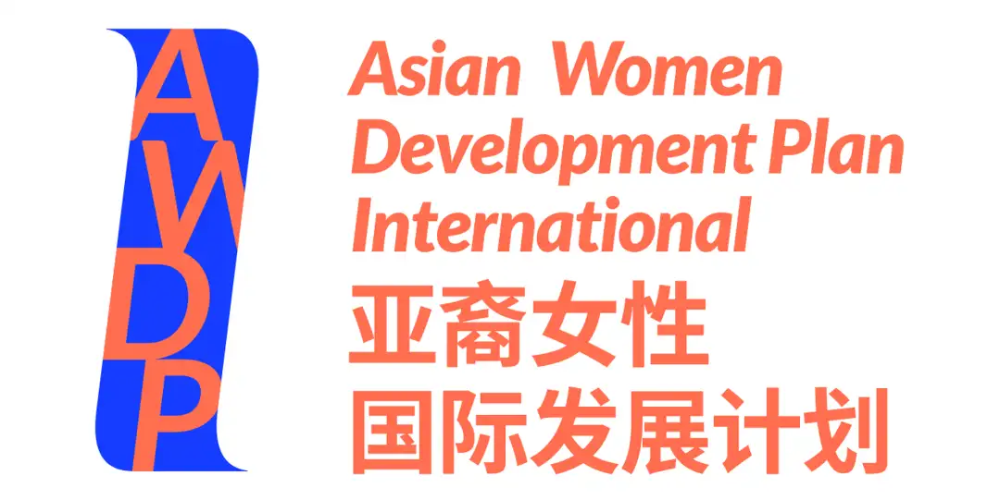
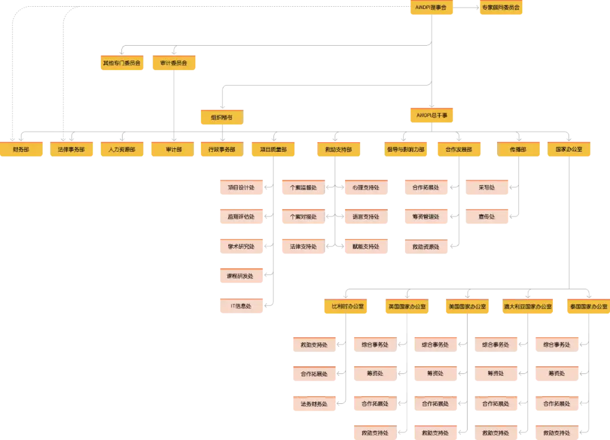
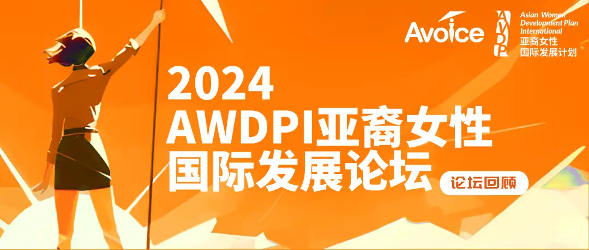

启程泰国，共筑屏障：AWDPI泰国国家办公室诚邀您加入！
AWDPI亚裔女性国际发展计划（Asian Women Development Plan International） 长期关注海外亚裔女性面临的暴力与歧视问题，致力于提供现实保护与持续赋能支持。在过往服务过程中，我们接触到来自泰国的求助个案与合作请求，也观察到当地在法律支持、语言协助、文化理解等方面的服务缺口。基于已有的项目基础与合作网络，我们在泰国设立国家办公室，以提升当地工作的响应能力和协调效率。为此，AWDPI现面向社会发起泰国国家办公室招募专场，公开招募各部门负责人及团队成员，欢迎具备责任心、专业能力与共同行动愿景的伙伴加入。
在本次招募中，我们会优先考虑长期在泰国生活/学习/工作的申请者，以完善人才梯队。如果你经验尚浅但饱含热情，我们同样会给予信任和机会，并期待与你共同成长；如果你是相关领域的资深专家和学者，也热烈欢迎加入AWDPI大家庭。让我们共同携手AWDPI泰国国家办公室，书写亚裔女性保护和赋能工作的新篇章！
关于AWDPI
ABOUT
AWDPI亚裔女性国际发展计划（Asian Women Development Plan International）是一家国际公益组织，致力于消除针对海外亚裔女性的歧视和性别暴力，并促进她们的赋能与发展。其由2020年成立的Avoice（海外华人女性保护项目，Against Violence to Overseas Chinese Women Program）发展而来。AWDPI在欧洲、北美和亚太的多个国家和地区开展工作，并在英国、比利时、美国、泰国和澳大利亚设立国家办公室团队。AWDPI与各界建立了广泛的合作网络，包括联合国系统组织、各国政府相关部门、国际组织、跨国公司以及学术机构。AWDPI倡导对海外亚裔女性的生存困境的关注，并为她们提供持续的保护和支持。AWDPI希望令海外亚裔女性在社会、经济、文化、教育等方面获得更多发展机会，帮助她们从弱势群体成长为推动社会进步的重要力量。


我们的使命
消除针对亚裔女性的暴力与歧视，促进亚裔女性的保护与发展
我们的愿景
为女性创造爱与平等的世界
我们的价值观
参与、包容、赋能
我们致力于
DEVOTION
为家暴幸存者提供救助支持。通过完善的救助体系和强大的海外救助网络，及时响应海外华人女性在家暴预防、紧急救助和后续服务等方面的需求。
建立社群联结。 通过组建线上社群矩阵和线下互助小组，为海外亚裔女性搭建交流、学习和互助的国际化平台，形成同伴支持网络，实现自我发展。
提升女性影响力。通过论坛、研讨会、工作坊等活动，积极促成多方联动，以分析经验、研究挑战、探讨对策，展现亚裔女性的力量与潜能。
发起宣传与倡导。积极开展公众宣传、学术研究和政策倡导，促进各国对海外亚裔女性的关注，并推动改善相关政策和发展环境。
招募计划
RECRUIT PLAN
AWDPI本次泰国办公室招募共有4个部门，15个岗位参与，其中大多数岗位欢迎大家以线上的形式进行，少数岗位欢迎大家以线下的形式进行。
工作时间：每周至少7小时，可以灵活安排，根据部门需求和个人时间协调。
工作周期：负责人需确定在AWDPI任职至少1年，成员需确定在AWDPI任职至少6个月。

AWDPI亚裔女性国际发展计划整体组织架构
开放岗位
POSITION
1
泰国国家办公室负责人*
2
合作拓展处
合作拓展处负责人*
合作拓展成员
传播运营负责人*
传播运营成员*
学术研究负责人*
学术研究成员*
3
救助支持处
救助支持处负责人*
语言支持成员*
法律支持成员
心理支持成员
4
综合事务处
综合事务处负责人*
综合事务成员
法务合规成员*
5
筹资处
筹资处负责人*
注：标有 * 的为本次招募的核心岗位，我们将在首轮优先选拔。
欢迎投递
WELCOME
岗位探索指南
扫描下方二维码，搜索部门名称查看该部门所有岗位信息，或搜索任一具体岗位名称查看岗位信息。

岗位投递通道二维码
如果你对其中任一部门和岗位感兴趣，请扫描以下二维码进行投递。
注：为避免无效申请，表单中“意向岗位”一栏的选项请在以上开放的岗位中进行选择。
投递须知
每位申请人可选择3个意向岗位
截止时间：北京时间2025年09月05日
如有疑问，欢迎联系邮箱[email protected]
招募流程
PROCESS
投递申请
01
简历筛选
02
笔试（如有）
03
面试
04
调剂（如需）
发送结果
注:
1. 任一环节未通过的志愿者将自动进入下一志愿的筛选流程。
2. 若三个志愿均未通过但符合其他岗位要求：
服从调剂者：进入调剂分配流程；
不服从调剂者：视为未通过筛选。
3. 所有筛选结果（包括未通过情况）都将通过邮件正式通知：
未收到结果反馈邮件的志愿者表明其申请仍在筛选流程中；
请注意查收邮件以获取最新进展。
你的收获
将超乎想象
当您选择成为AWDPI大家庭的一员：
终身价值账户
志愿者证书（工作满6个月及以上）/实习证明（工作满1年及以上）
优秀成员可以获得项目核心团队/理事/专家顾问的指导和推荐信
参与评选月度和年度优秀志愿者
接收全球性别平等相关领域岗位内推
积累「志愿者积分」兑换组织各项周边等福利
加入AWDPI终身校友会，结识来自世界各地、志同道合的伙伴，与大家一起学习成长
专业成长加速器
解锁「政策倡导-社群动员-跨国协作」三维能力模型
参与内部国际性别平等与女性发展领域的主题活动与培训
参加内外部的能力建设和交流活动，参加志愿者线下团建活动
参与性别平等、女性保护与发展、青年赋能等相关领域的课题研究，参与制定影响女性主义行动计划的实证研究
全球行动网络接入
加入全球行动圈，与国际组织、国内外公益机构、学术机构、基金会的合作交流机会
进入亚裔女性领导力池，获全球组织合作伙伴实习、活动内推机会
有机会成为亚太青年企业家APEA女性国际发展委员会执委
了解更多
MORE
AWDPI亚裔女性国际发展计划介绍链接

2024 AWDPI亚裔女性国际发展论坛回顾链接

注：Avoice海外华人女性保护项目和亚裔女性国际发展论坛为AWDPI的品牌项目
AWDPI 五周年影响力报告链接

撰稿｜徐晓宁、周欣愉
排版、封面｜池一诺